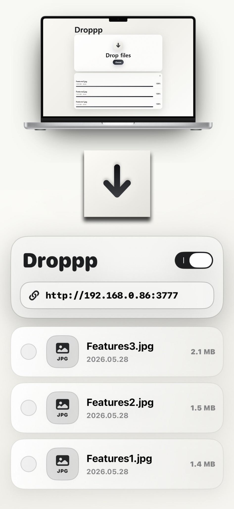
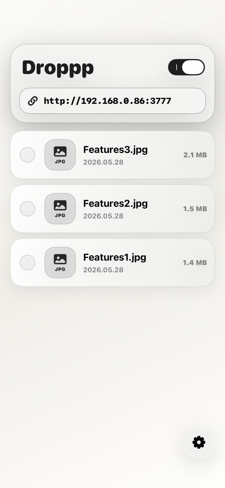
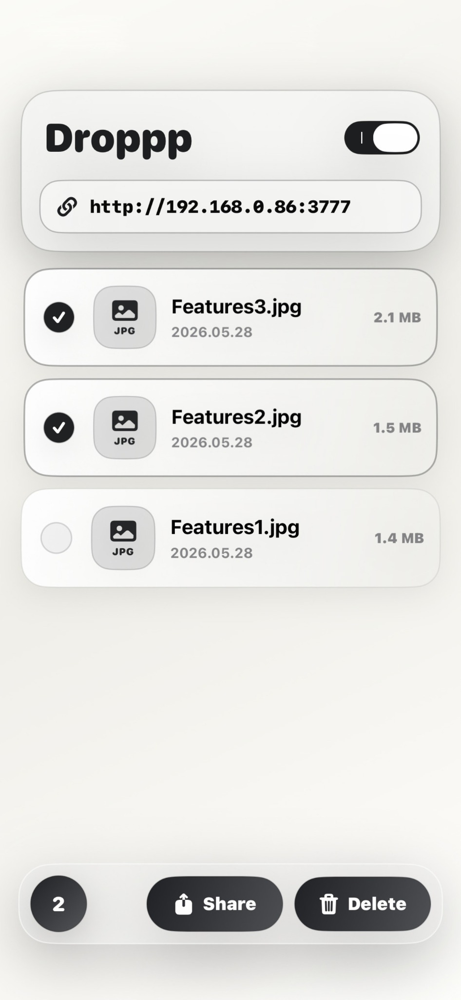
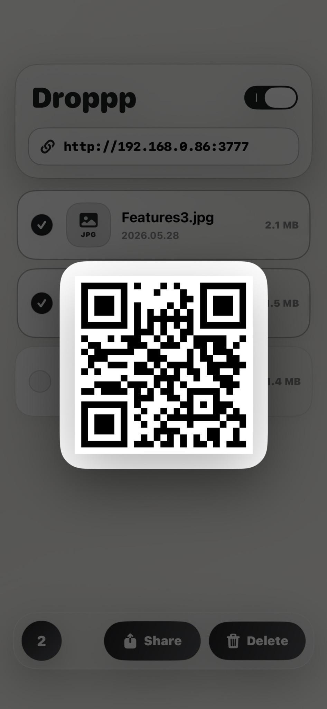

Browser upload
Use any nearby device browser on the same Wi-Fi network to choose files or drag them onto Droppp's local web page.
Local Wi-Fi file drop for iPhone and iPad
Open Droppp, start the local drop page, and move photos, videos, documents, ZIP files, and more through a browser on the same Wi-Fi network.

Designed for real transfer moments
Droppp is built around a simple local flow: start the app, open the address from another device, then upload or download files without installing desktop software.
Use any nearby device browser on the same Wi-Fi network to choose files or drag them onto Droppp's local web page.
Received files are saved inside Droppp on your iPhone or iPad until you share, move, or delete them.
Devices connected to the local web page can browse and download files already stored in Droppp.
Select multiple files in Droppp and move them to apps that support drag and drop.
Add files from Photos, Files, or other apps by using the add button or dragging items directly into Droppp storage.
Review recent file activity such as additions, downloads, shares, deletions, and data moved over time.
Useful when the usual path gets in the way
Open the Droppp address in a desktop browser and drop work files, screenshots, documents, or archives into the app.
As long as both devices are on the same Wi-Fi network, the sender only needs a browser.
Gather files locally in Droppp, then share, move, or delete them when the transfer is done.
A calm file library
Droppp keeps the main screen direct: server toggle, local address, file list, QR access, file actions, and activity history.



Help that belongs inside the app
The Help page is shaped as a first-use guide, with each step matching the screens users see after installing Droppp.
Private by design
Droppp does not require an account, login, analytics, ads, or cloud upload. Transfers happen within your local Wi-Fi network while the local server is running.